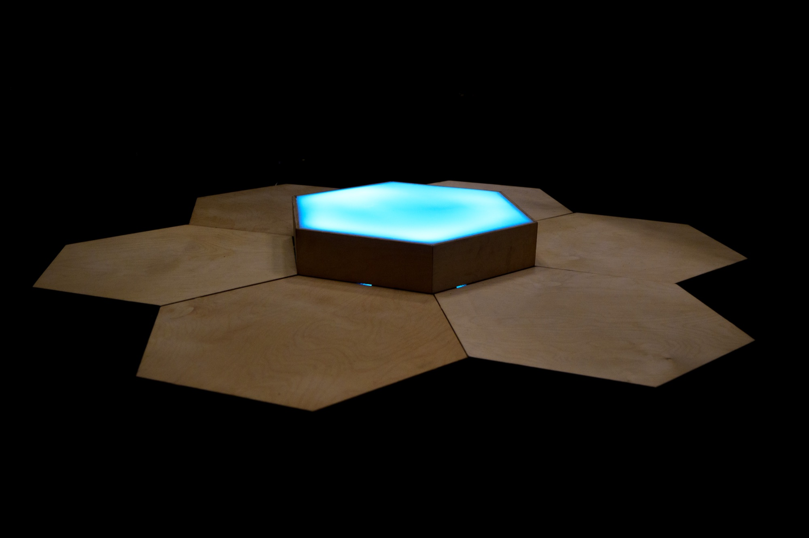

Resonant Thrum is an installation and lecture-performance for two to six people. Participants sit on a hexagonal grid of seven plywood tiles, each with a haptic motor. Each person wears a heart-rate monitor. For three minutes they share a bounded ritual. Each tile pulses with its occupant's heartbeat, while a central tile registers the group's average cardiac synchrony. As heart rates converge, the sound turns resonant and the light warms.
Proposed for the Ars Biologica ArtXScience Residency — Ars Electronica × České Budějovice, European Capital of Culture 2028.

For this residency, the work extends into the more than human world. The floor of the exhibition becomes home to an ecology of bioluminescent marine dinoflagellates/microalgae. The haptic pulse of each person's heartbeat reaches the water as vibration and the cells answer with light through mechanotransduction. The central tile lifts out so the group can see the glowing floor between them. Between pulses, soft coloured lighting and the group's exhaled carbon feed the culture's photosynthesis. The cells build their light from the chlorophyll they grow during the exhibition.
The piece evolves into a set of nested biorhythms, from the light controlled by heartbeats to the slow ecology of a culture fed across the whole run of the show. The work lives through participation. Heartbeats are elsewhere harvested for surveillance, prediction of engagement, and the wellness industry. Resonant Thrum reclaims the same signals as an opportunity for mutual attunement between species. This assemblage makes visible that humans have never been isolated individuals but are members of a more-than-human social biological world, kept alive by light and breath.
A sketch of the proposed system for this iteration — the living floor replaces the central tile, and the group's heartbeat and breath drive a two-way exchange with the culture.
Resonant Thrum evolves from Resident Thrum, which premiered at ACM Creativity & Cognition in 2026. See the Resident Thrum project page for the installation and the research behind it.
The complete residency proposal, with references and technical notes, is available to read here.
Read the full proposal